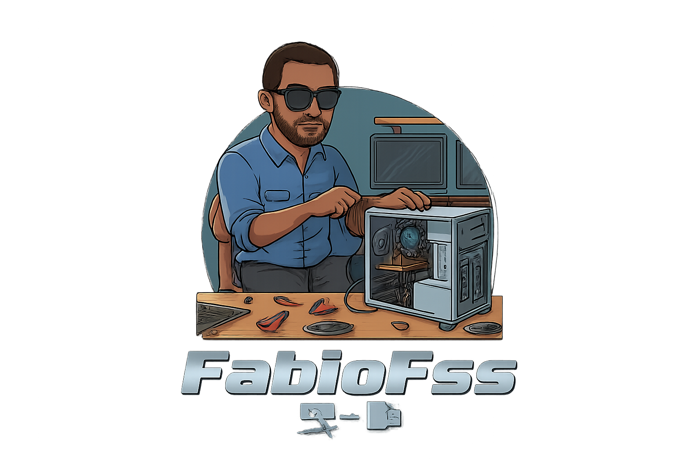
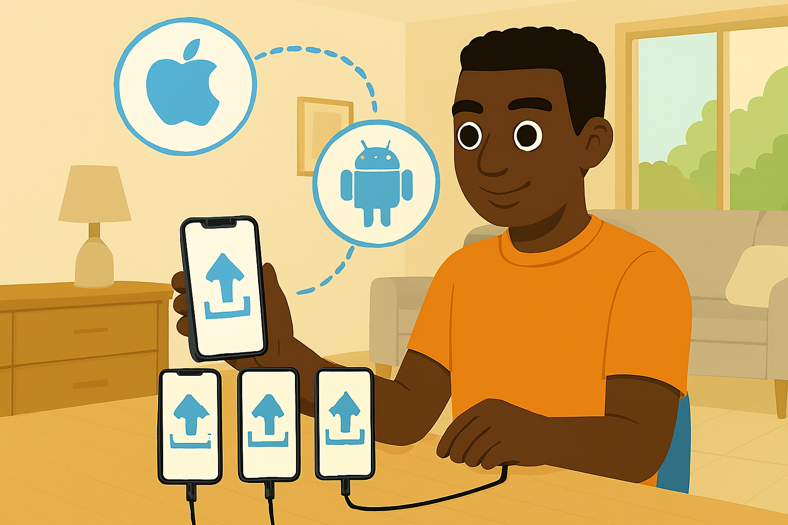
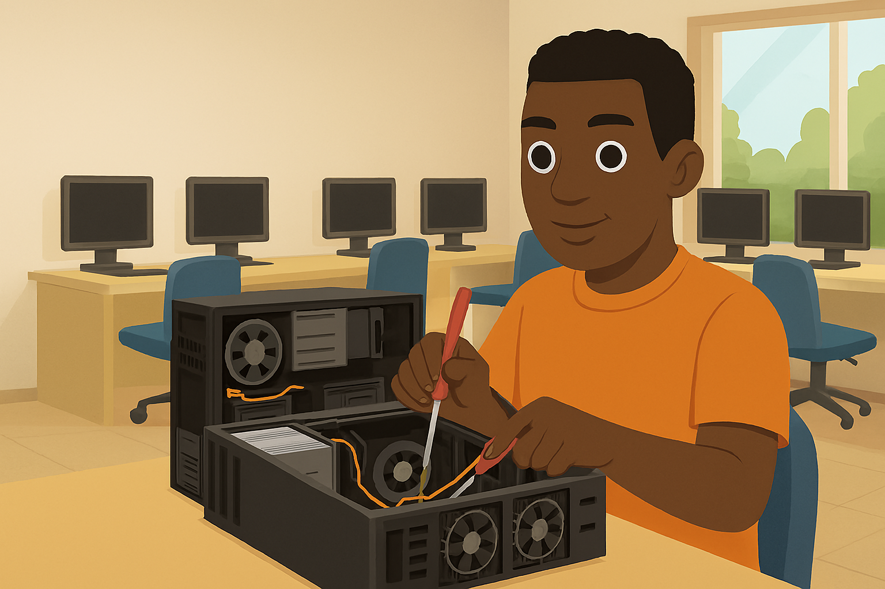
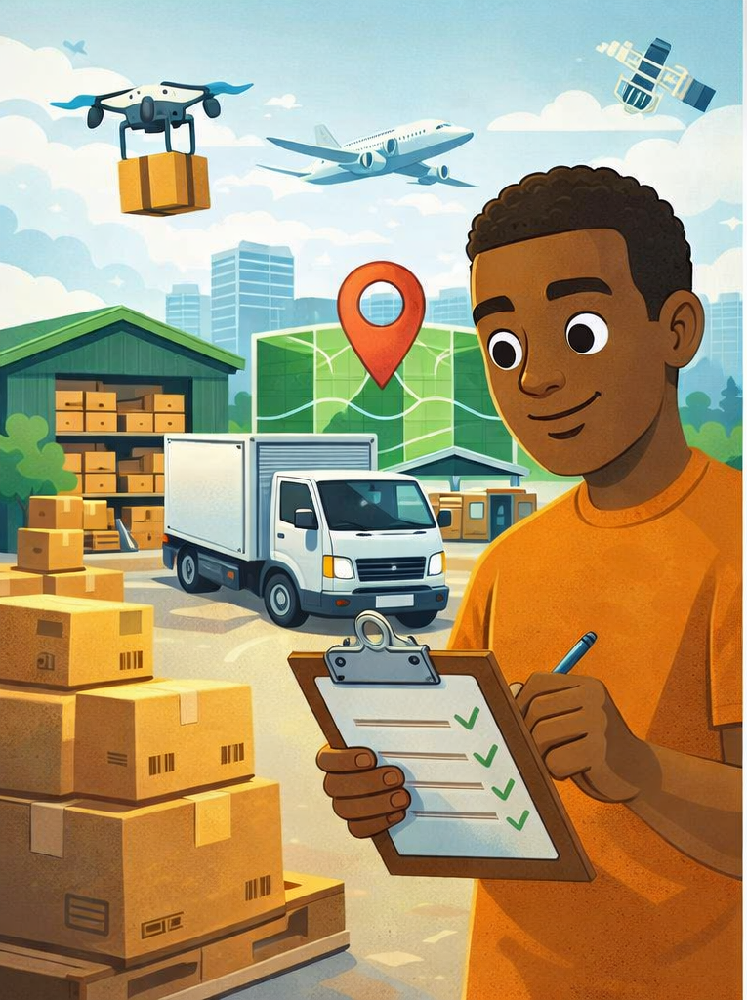
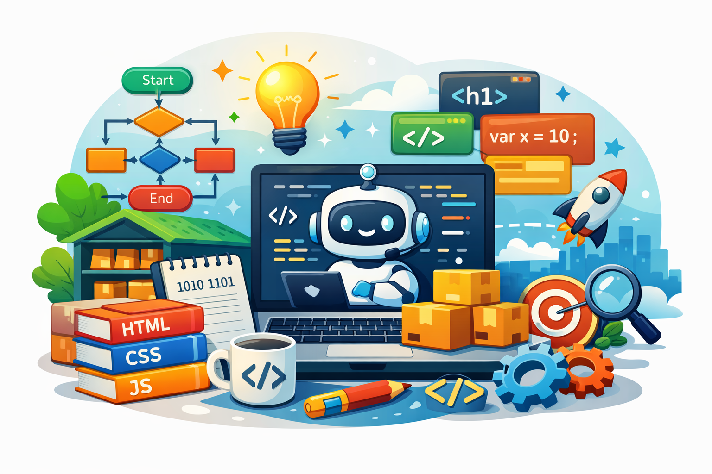

Técnico de Informática com mais de 15 anos de experiência em TI

💻 Sou Especialista em Suporte Tecnológico com mais de 15 anos de trajetória de experiência em suporte técnico para computadores, notebooks, MacBooks e diversos equipamentos tecnológicos.
🔧 Tenho especialidade em diagnóstico, manutenção e reparo de hardware e software, migração de arquivos, otimização de desempenho e práticas de segurança digital.
📱 Também atuo na configuração e transferência de dados de dispositivos móveis, instalação de soluções IoT e possuo experiência em sistemas de CFTV e cabeamento estruturado, ampliando minha atuação em infraestrutura tecnológica.
🌐 Minha trajetória inclui suporte remoto e presencial, sempre com foco em eficiência e qualidade no atendimento a colaboradores internos e clientes finais.
📦 Paralelamente, curso Técnico em Logística, movido pela paixão em transformar caos em organização. Para mim, cada estoque é um quebra-cabeça, cada rota é uma estratégia e cada entrega é uma missão cumprida.
🚚 Acredito que logística não é apenas mover produtos, mas sim conectar pessoas, lugares e necessidades com inteligência e eficiência. Essa visão me permite integrar tecnologia e logística, criando soluções que unem o movimento físico ao digital.
🌐 Atualmente curso Redes de Computadores (CST), expandindo minha atuação para infraestrutura, redes e soluções corporativas.
✨ Minha principal habilidade é identificar necessidades tecnológicas e operacionais e oferecer soluções personalizadas, unindo conhecimento técnico, visão estratégica e foco no cliente.
Integração de dispositivos inteligentes com Alexa, criando ambientes automatizados com conforto e segurança.

Transferência completa de dados entre smartphones Android e iOS, com foco em segurança e integridade.
Instalação e configuração de sistemas de CFTV para segurança residencial, condomínios e associações de táxi, com acesso remoto, oferecendo soluções completas de monitoramento.

Diagnóstico e manutenção de hardware e software em computadores, notebooks e MacBook, garantindo desempenho ideal e confiabilidade.

Transformo caos em organização, aplicando estratégias para otimizar estoques, rotas e entregas com eficiência.

Explorando os fundamentos da programação com foco em lógica, algoritmos e desenvolvimento de projetos simples e funcionais.
Vamos conversar sobre seu próximo projeto!
Email: fabiofss@outlook.pt
WhatsApp: (21) 99056-2661
GitHub: github.com/FabioFssTech
Localização: Rio de Janeiro, Brasil